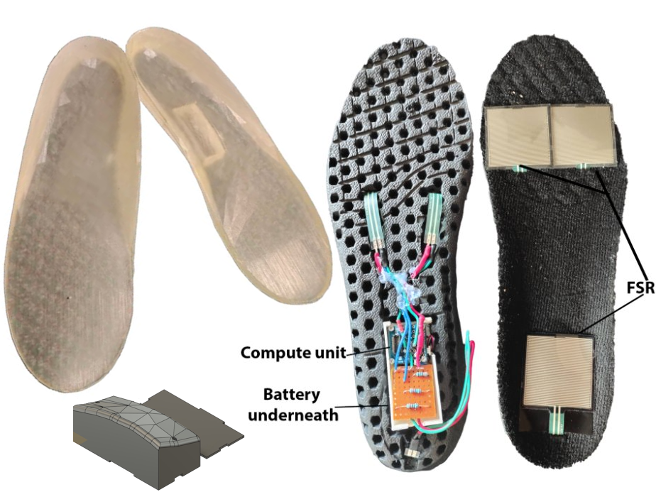

The Challenge & Mechanical Design
Gold-standard instrumented insoles cost upwards of £2,000, severely limiting clinical accessibility for children with physical disabilities. The objective was to engineer an unobtrusive, wearable alternative using off-the-shelf components.
To maximize wearer comfort and hide the compute unit, I utilized a FARO Quantum Max ScanArm to laser-scan consumer insoles. I then designed a custom PLA electronics enclosure to fit securely within a carved cavity in the heel, bypassing the latent elasticity issues found in early 3D-printed TPU prototypes.